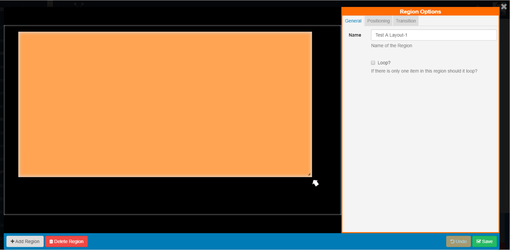
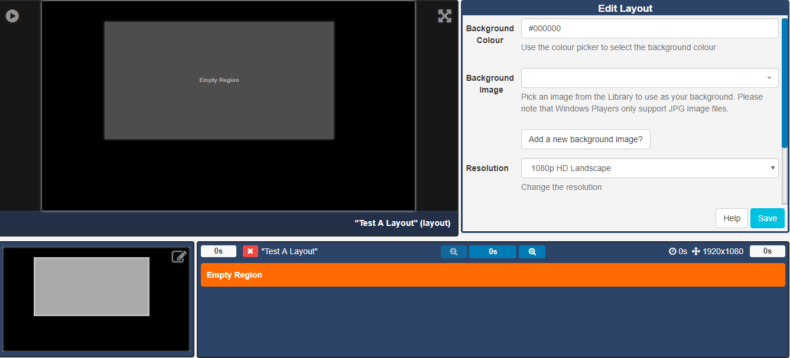
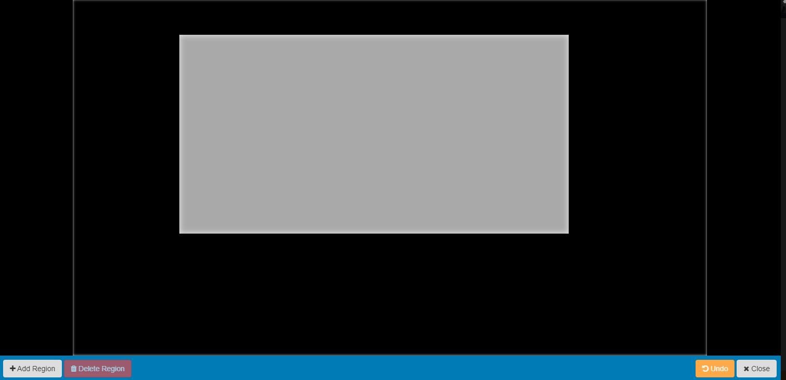
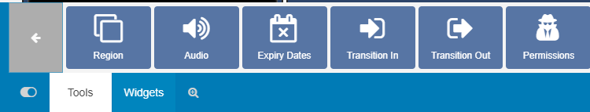

Regions (New Features for v2)
Regions define areas on a Layout which hold Widgets (media content) to form sets of timed content.
If you are using 1.8 please use the following link to the appropriate manual page for your version: Regions 1.8
A new Layout will contain one full size empty Region by default ready for resizing, positioning and adding media content to.
Ensure that the Layout has been 'checked out' to enable editing.
Click on the 'edit' icon located in the top right hand corner of the Layout Navigator window to open.
Regions can be positioned anywhere inside the Layout canvas using drag and drop, and resized by using the resize handle located in the lower right-hand corner of the Region.
Click in the Region to resize and position, further actions are available via the tabs on the Region Options form.

Region Options
General
Complete a name for the Region and use the checkbox to Loop the content if required.
Positioning
This tab allows for precise sizing and positioning. Make the Region full screen by clicking on the text which will display the dimensions the Region will be set by.
Transition
Exit Transitions happen when the last media item in a Region is shown and occurs only when all other media items have expired in the other Regions.
Transitions are only supported in the Linux, Android and webOS Players and need to be pre configured. Please contact your Administrator.
Once you have Saved your edits click Close to return to the Layout Designer screen.

Adding Regions
Regions can be added in two ways:
-
open the Layout Navigator window and click on the Add Region button.
- select Tools on the bottom toolbar and click on Region to add or drag to the Layout Navigator window.
Deleting Regions
Remove Regions and all associated content by clicking on the Delete Region button in the Layout Navigator window. Please note: This action cannot be undone.
Regions can be deleted from the Layout Designer by clicking on the Region and clicking the bin icon on the bottom toolbar or by right clicking on the target Region and using the bin icon.
Permissions for a Region
Control which User and User Groups can view/edit/delete the Region. Click on the Permissions button, located under Tools on the toolbar then click or drag to the target Region. Edit the Permissions form as appropriate.
Assign/Edit permissions by right clicking on the target Region.
Please note: The owner of the Layout has full control over sharing.
A globally shared Layout can have Region access rights defined for any other users of the CMS. Read more for Permissions for User Objects
Please note: The Windows Player does not support overlapping Regions. For a mixed Player network ensure Regions do not overlap for the best results.